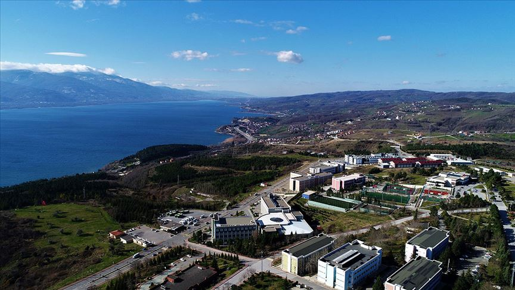

Yunus İşler
| Computer Engineering Student |
Merhaba,ben Yunus İşler.Bilgisayar Mühendisliği öğrencisiyim.Sakarya Üniversitesi'nde eğitim görmekteyim.
Okulumu görmek isterseniz :

SAÜ hakkında detaylı bilgi için tıklayınız : Sakarya Üniversitesi